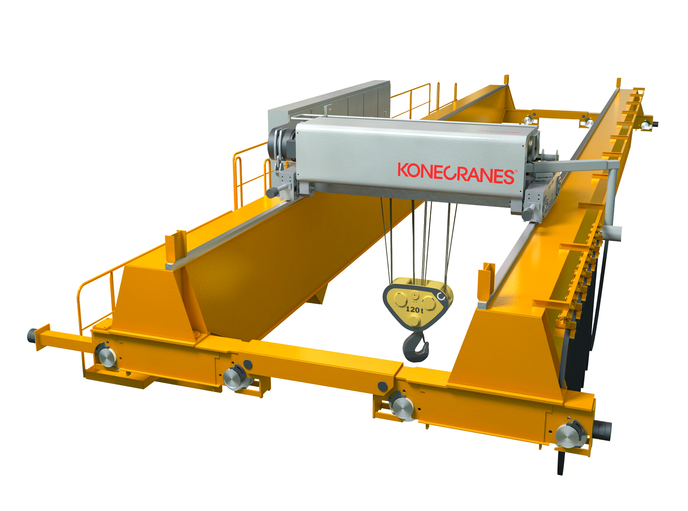
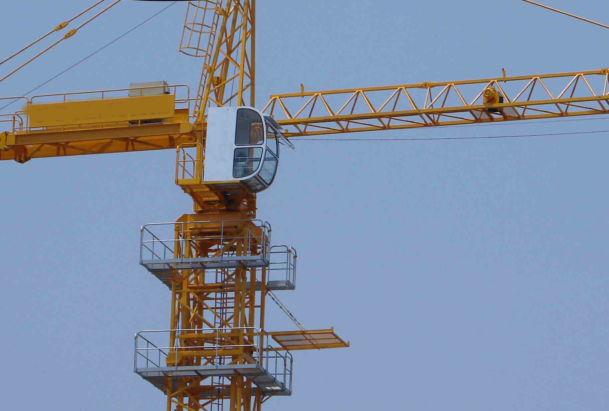
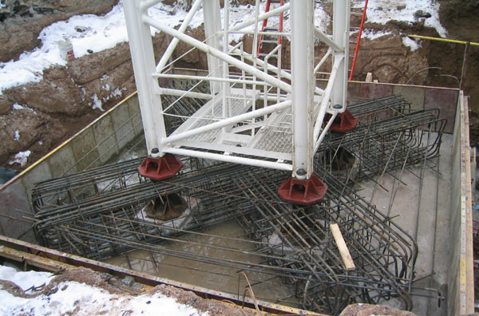
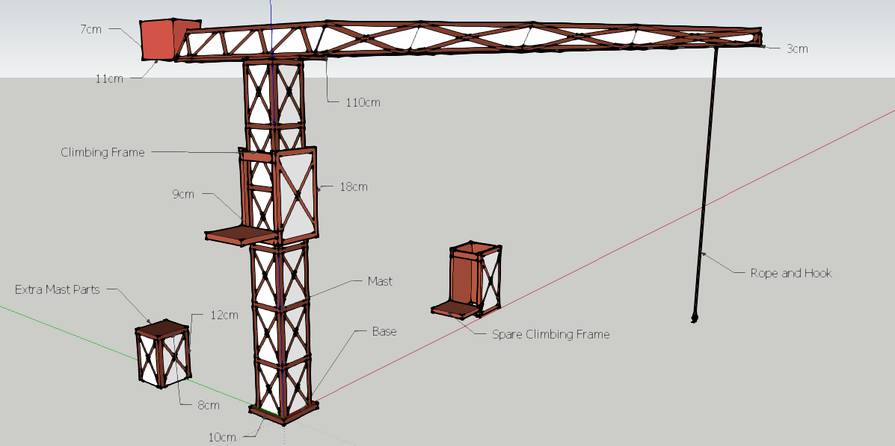
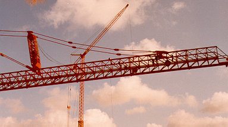
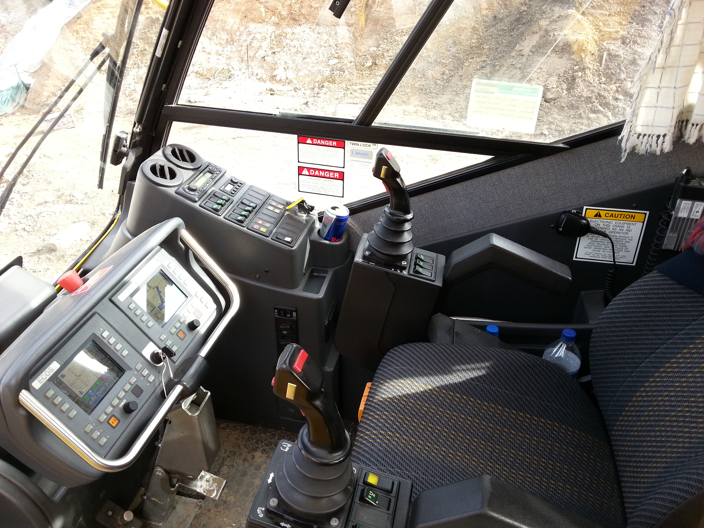

Technology Summative Assignment
Due on:
- The crane was invented by the Ancient Greeks and Romans in the late 6th century BC and could carry a maximum of 150 kg load
- During the industrial revolution, Sir William Armstrong invented the hydraulic crane.
- Lifting Blocks for the construction of Greek Temples
- In the Roman Empire, they further developed Greek to carry a 450kg load for construction of towns and buildings reaching enormous dimensions
- Lifts steel, concrete, large tools, generators and a wide variety of other building materials
- Grows taller with the building
- Can rotate 360 degrees
- Base is bolted to large concrete to prevent it from falling
- Assembling new buildings without using or without the abilities of a mobile crane
- Rail connects to the hook with a pulley
- Location of the hook controled by the operator
- Climbing Frame slightly larger than the crane is slipped into the crane and can elevate the top of crane while inserting another part of the mast.
- Cranes have a Large Concrete Pad (10x10x1.3 meters)
- Large Anchor Bolts embedded into the pad to support the base of the crane
- No support wires
- Steel trussed sections on the Mast
- Non-attached Max Height: 265 feet (80m)
- Max Reach: 230 feet (70m)
- Counterweights: 20 tons
- It uses one or more simple machines to create mechanical advantage and thus move loads beyond the normal capability of a human.
- Lever (Cointains horizontal beam pivoted about the fulcrum)
- Pulley (Cables are wrapped multiple times round the fixed pulley system and round another pulley attached to the load)
- "The pulley system delivers a force to the load that is equal to the applied force multiplied by the number of lengths of cable passing between the two blocks. This is the mechanical advantage."
- Hydraulic Cylinder
- How do cranes grow with the building?
- A machine that can build itself
- I choose the first idea, where I showcase the Climbing Frame
And then I created my mind map


- Jib is responsible for the movement of the hook and the carry of the load
- Machinery Arm carries the counterweights and some machines
- The load is balanced, so the crane does not tip over by the counterweights
- The machinery is responsible for bringing the crane's neck up and down, or moving the hook back and forth

- Base connects to the mast (tower) and further stabilizes the crane.
- Masts connects on top of one another to stack in height, growing with the building it's constructing
- Either free-moving along the mast, or attached to the jib and machinery arm
- Pushes the top up extending the height of the crane
- Another piece of the mast gets pulled up by crane and workers insert it into the mast, extending the final crane's height
- The slewing unit sits at the top of the mast
- In charge of turning the entire Jib and Machinery Arm
- Turned with a gear and motor
- Pretty much what is it
- Operator controls, where the hook is, when to rise and drop, how far to turn and pretty much everything that happens in the crane is controlled here.
- Shrunk the width and length of the mast
- Shrunk the width of the jib
- Removed X supported base
- Changed the material of the counterweight
- Removed Climbing frame clipping
- Removed trussed mast
- Add the hook and rail
- Add the Slewing Unit
- Use a more stronger material
- Make a better base
Youtube: https://www.youtube.com/watch?v=RB91Sm-kGJ8
Google Images: https://images.google.ca/?gws_rd=ssl
Wikipedia: http://en.wikipedia.org/wiki/Crane_%28machine%29
How stuff Works: http://science.howstuffworks.com/transport/engines-equipment/tower-crane2.htm
Impress.js: http://bartaz.github.io/impress.js/
Google Sketchup: http://www.sketchup.com/products/sketchup-make
utilising the full power of modern HTML5 and CSS transitions,
better than Prezi,or Powerpoint!